Le Ciel Bleu de Mayotte
ÉPISODE 3
L'Engrenage

"Le lendemain matin. On m'a réveillée tôt."
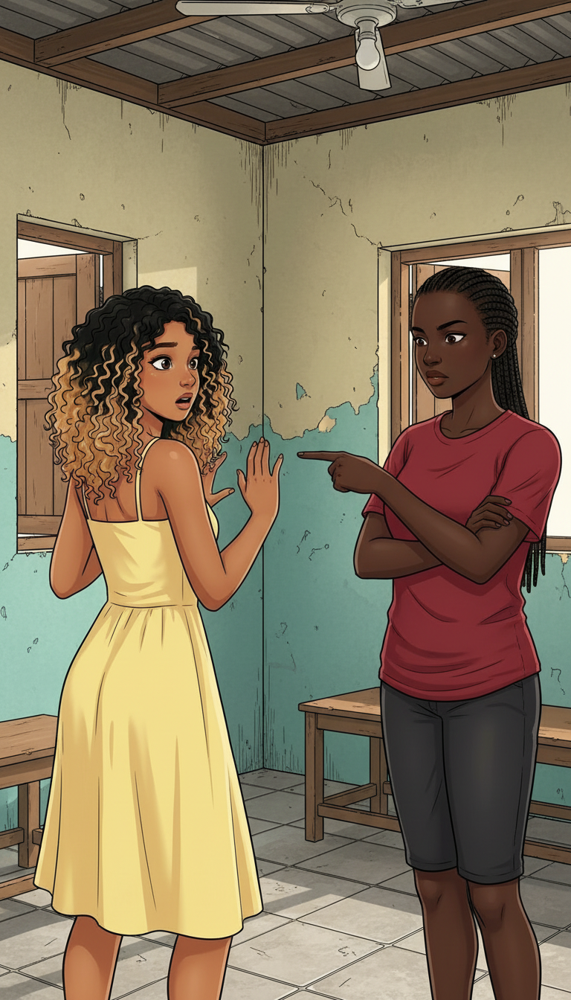
"La meneuse ne souriait plus. C'était une autre personne."
Ce soir, tu vas recevoir quelqu'un. Tu fais ce qu'il demande, il paie, on partage.
Quoi ?! Non... Non, je ne peux pas faire ça !
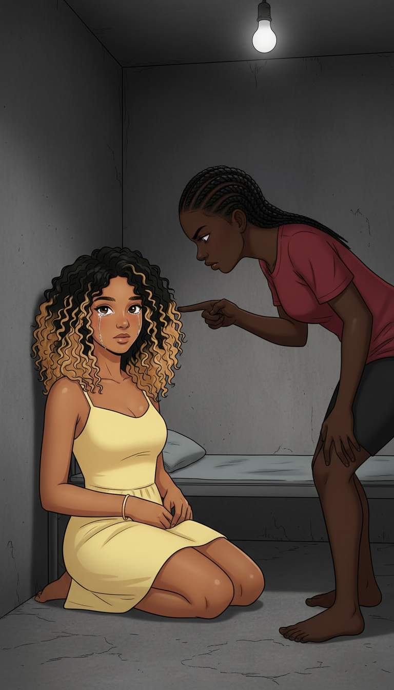
Tu crois qu'on t'a hébergée gratuitement ? Tu nous dois. Et dehors, tu n'as rien. Personne. Réfléchis bien.
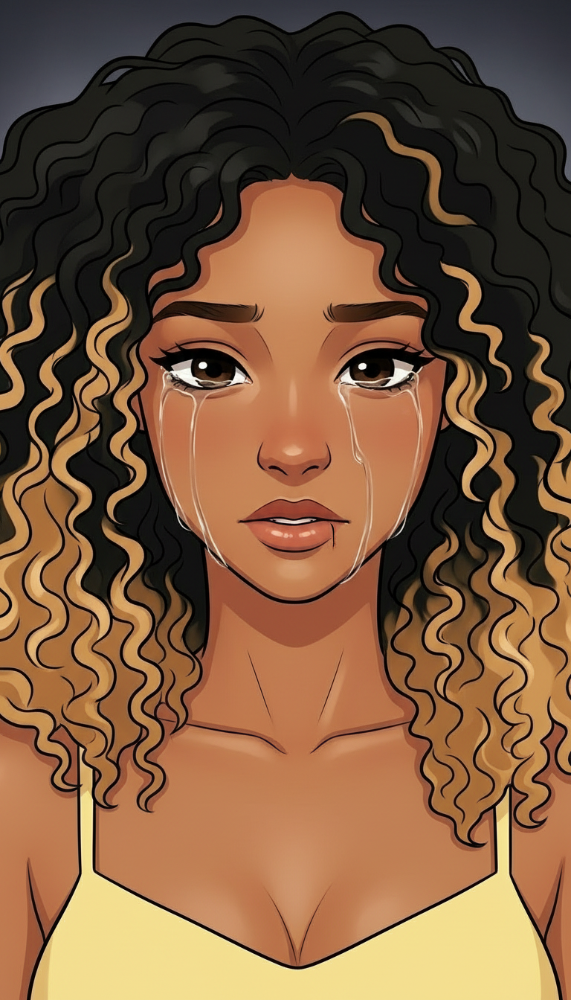
"Comment j'ai pu être aussi naïve ? Chaque gentillesse avait un prix. Et maintenant je ne pouvais plus refuser."
Je veux rentrer chez moi... mais chez moi n'existe plus.
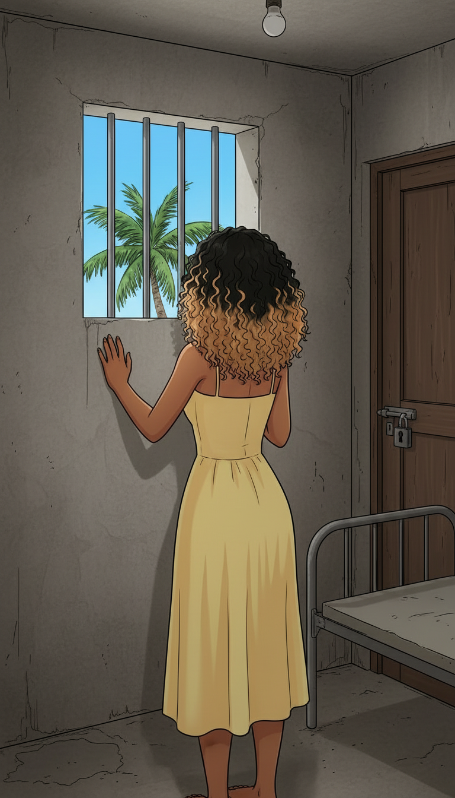
"J'ai cherché une issue. La porte était surveillée. La fenêtre trop haute. Et dehors, je ne connaissais personne. Personne ne me connaissait."
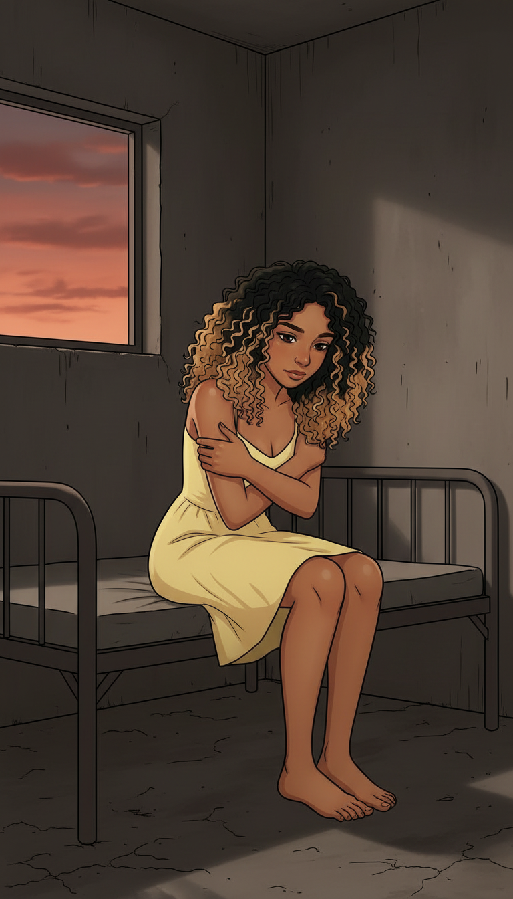
"Le soleil s'est couché. Mes derniers espoirs avec lui."
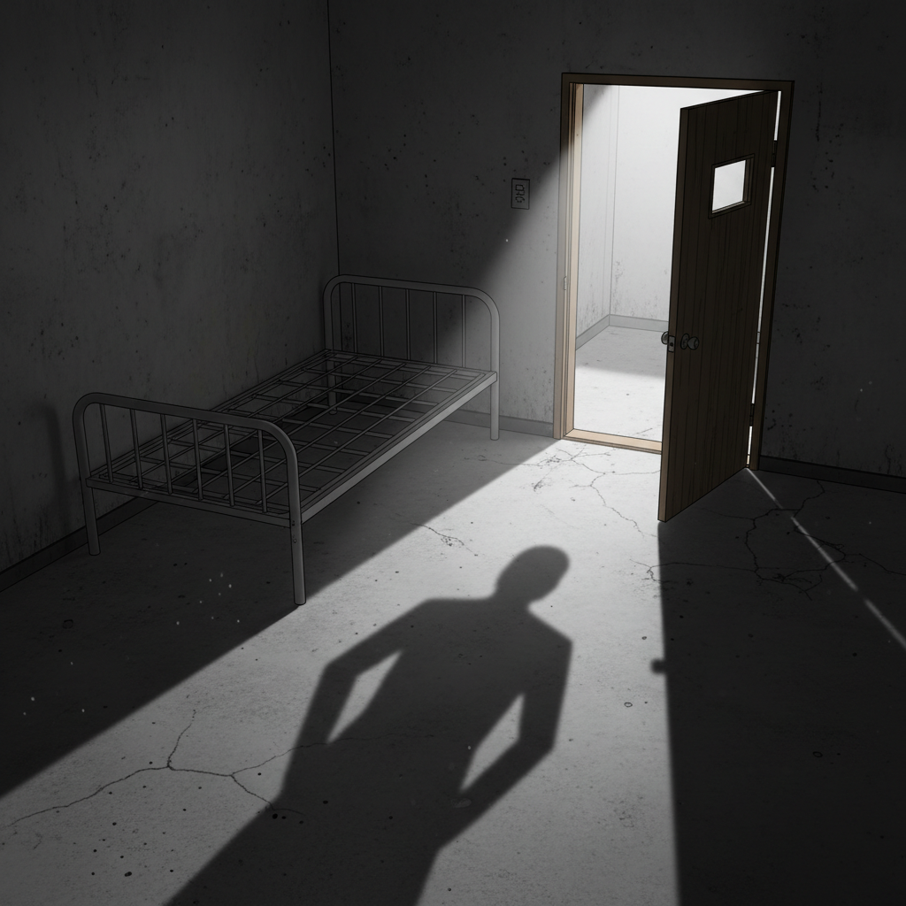
"Des pas dans le couloir. La porte s'est ouverte. J'ai fermé les yeux."
GRINC...
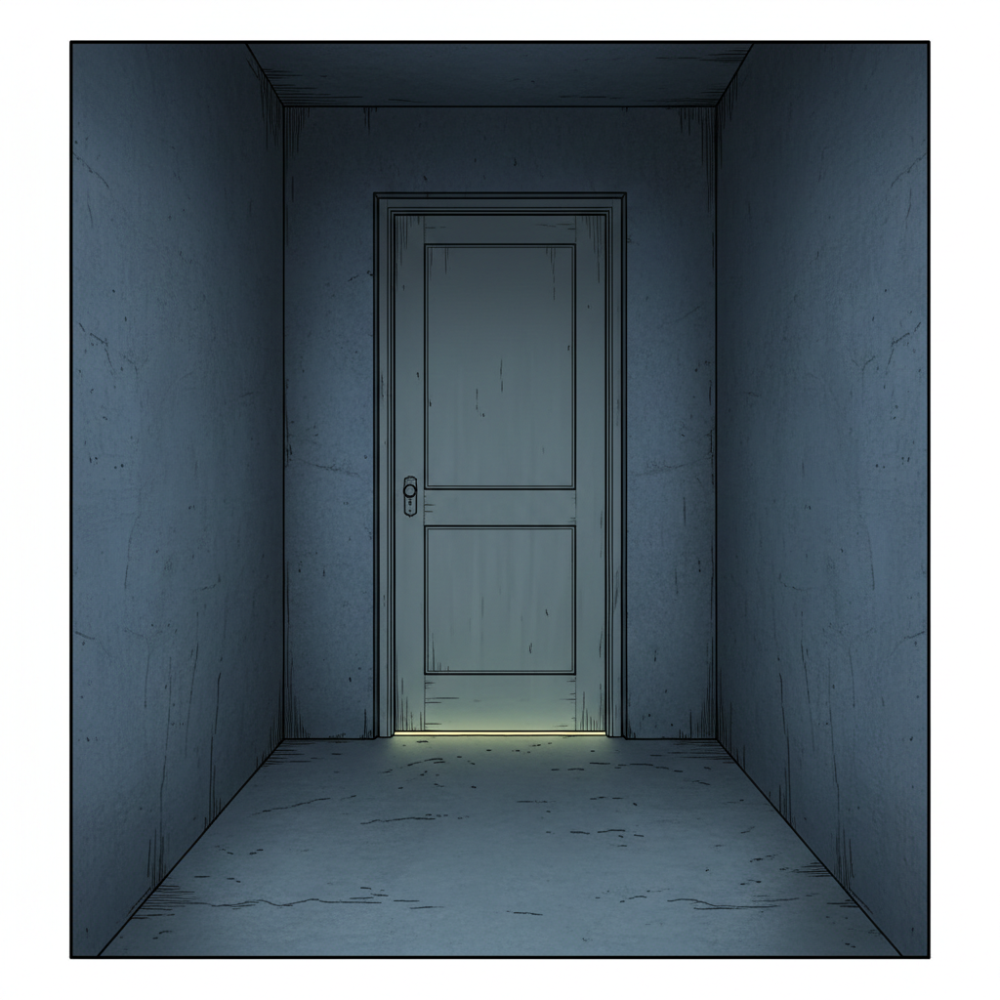
...
CLAC
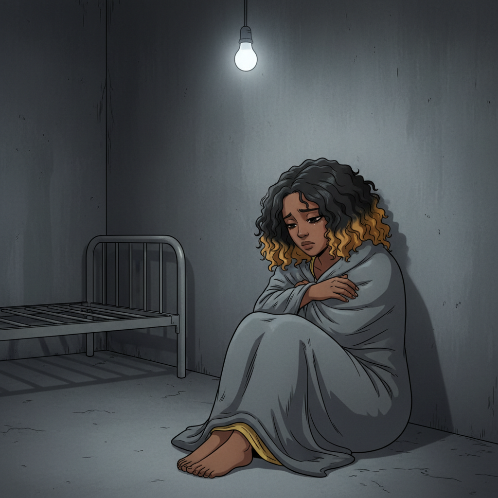
"Quand tout a été fini, mon corps était toujours là. Mais une partie de moi était partie. Pour longtemps."
— Semaine 2. Semaine 3. Semaine 4... —
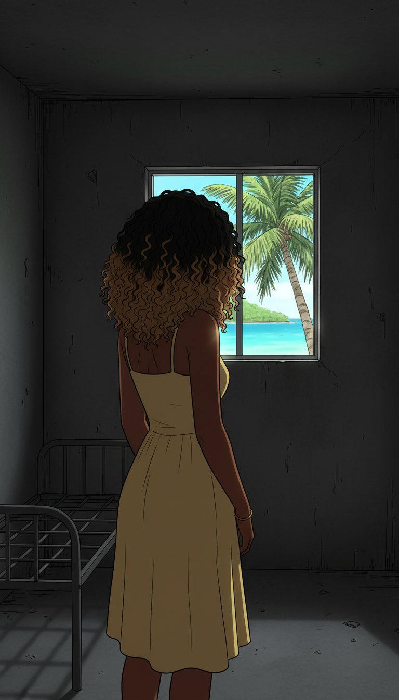
"Les jours ont passé. Puis les semaines. Je ne comptais plus. Je survivais — c'est tout."
Est-ce que quelqu'un me cherche ? Est-ce que quelqu'un va venir ?
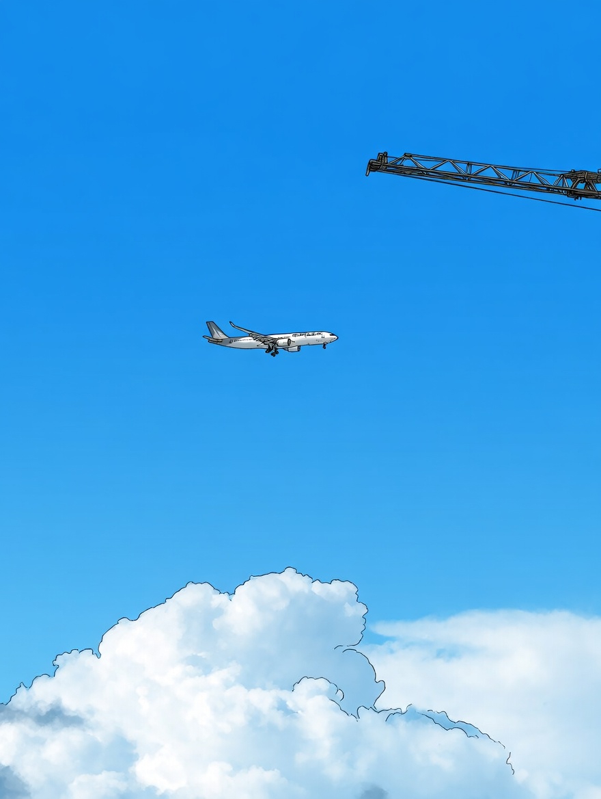
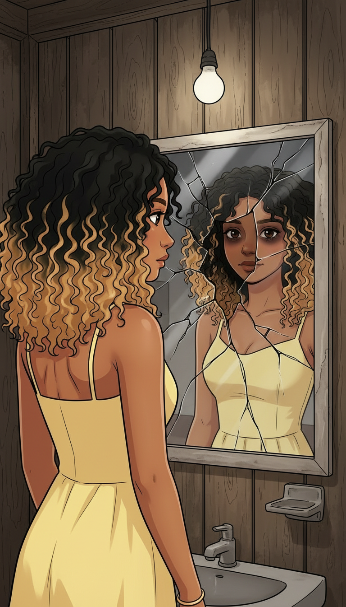
"Je ne me reconnais plus."
Celle qui est dans ce miroir... ce n'est pas moi. Ce n'est pas moi.
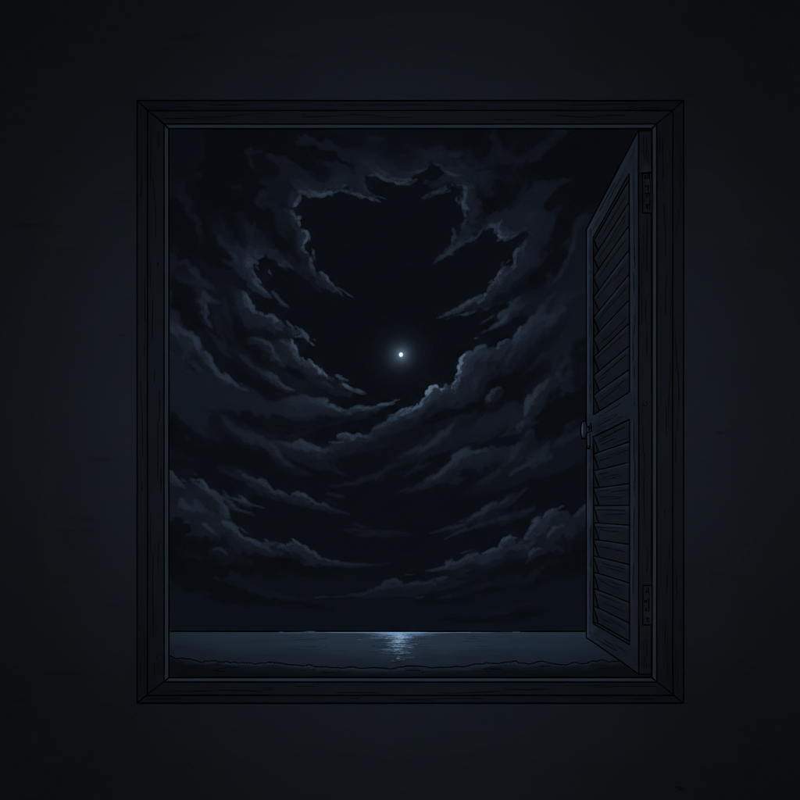
"Je survivais, jour après jour, dans un cauchemar sans fin. Mais même dans la nuit la plus sombre... parfois, une lumière finit par apparaître."